PLE Index
필지 구획 효율성 자동 평가
Parcel Layout Efficiency, Redevelopment Feasibility of Parcels in Seoul
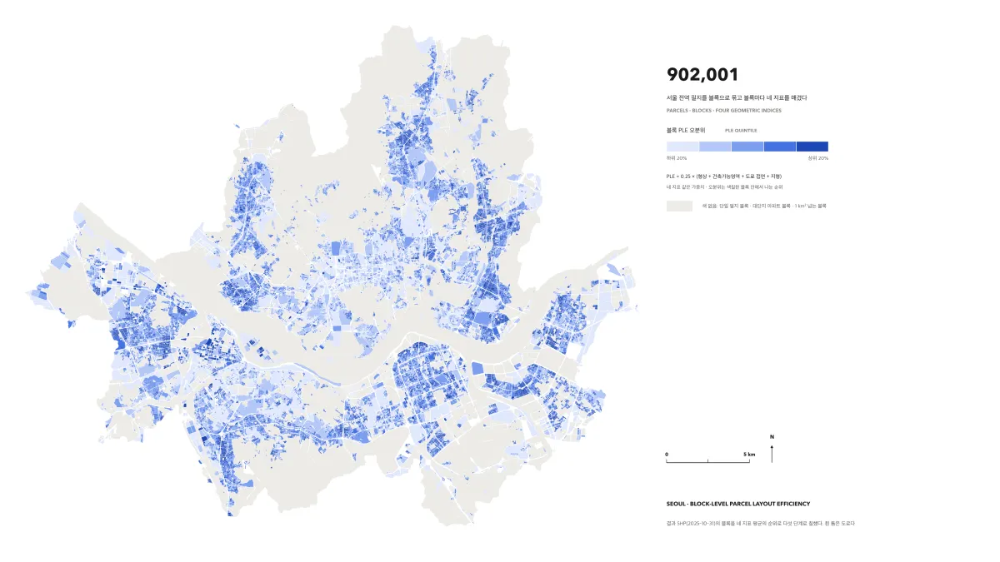
필지 구획이 블록의 잠재력을 얼마나 살리고 있는지 점수로 매기는 PLE 지표를 만들어 서울 전역 블록에 적용했다.
서울의 노후 주거지에는 맹지와 자투리 필지, 깃대형 필지처럼 역사적으로 형성된 불규칙한 구획이 많다. 이런 필지는 건축법 제44조 접도 의무 때문에 단독 개발이 어렵다. 서울시는 소규모주택정비사업으로 필지를 묶어 개발하도록 유도하지만 어느 블록이 통합 개발 효과가 큰지 고르는 일은 정성적 판단에 맡겨져 있었다.
PLE(Parcel Layout Efficiency)는 형상, 지형, 건축가능영역, 도로 접면 네 지표의 가중합이며 가중치는 사용자가 바꿀 수 있다. 지표는 표준지공시지가 평가 기준과 건축법의 기준을 기하 연산 규칙으로 옮겨 만들었고, 분할 전 블록 대비 분할 후 필지들의 값으로 0~1 사이에 정규화된다. Rhino Python과 Grasshopper를 GIS와 연동해 서울 필지 SHP와 DEM을 Rhino 객체로 바꾸고, 형상 오류를 보정해 블록을 만든 뒤 점수를 붙인 SHP로 내보낸다.
서울 전역 902,001필지로 만든 약 42,000블록 가운데 단일 필지 블록과 대단지 아파트를 뺀 27,491블록에 같은 가중치(0.25)를 적용했다. 점수는 0.052~0.917로 강남·서초 같은 계획 주거지에서 높고 종로·관악 같은 역사 도심과 구릉지에서 낮았으며, 도로 접면 지표 상위 20% 블록의 연면적 중앙값은 하위 20%보다 30.0% 컸다. 점수가 낮은 블록은 대개 지형이나 도로 접면처럼 지표 한두 개의 결함에서 비롯되어 블록마다 손볼 지점을 짚어낼 수 있다.
Indices
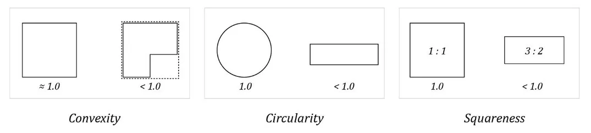
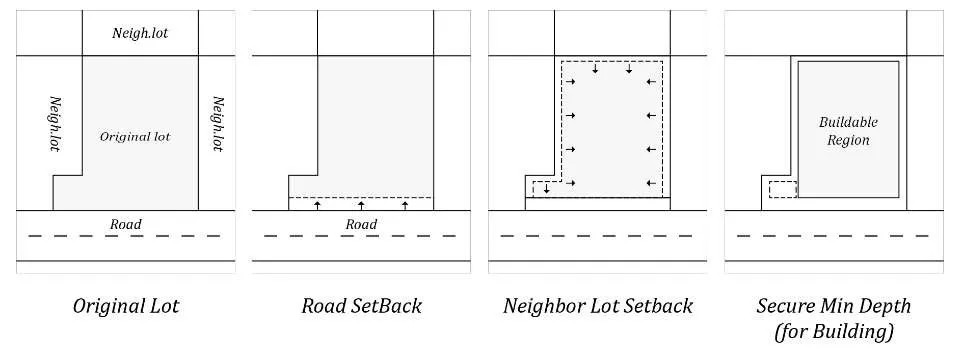
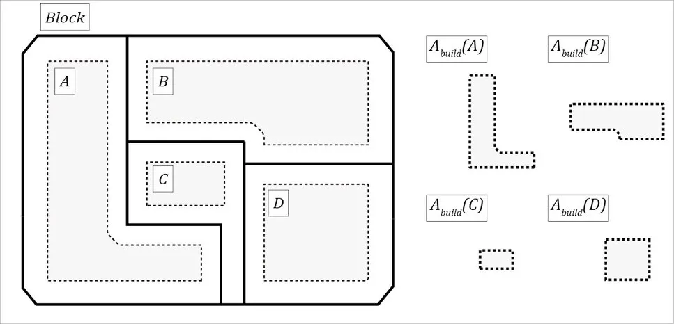
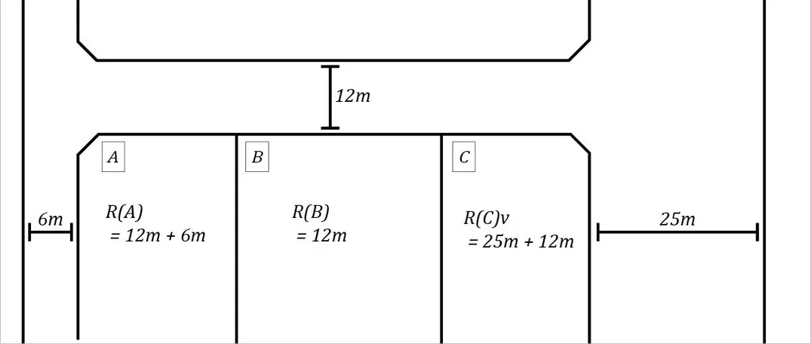
Block Anatomy
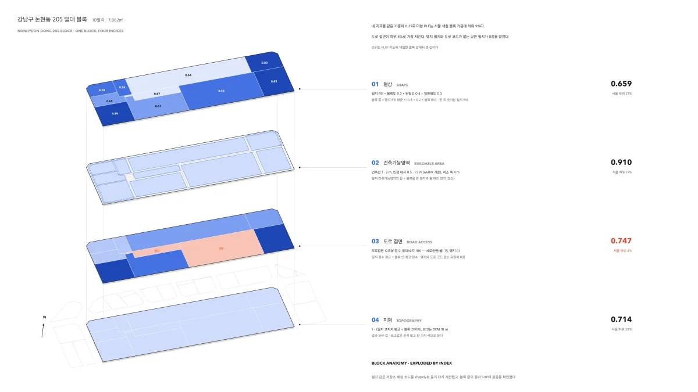
Pipeline
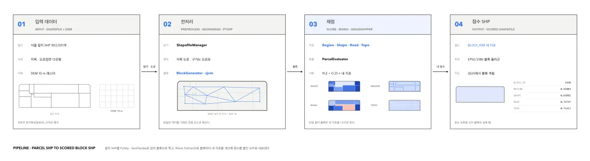
Planned and Unplanned
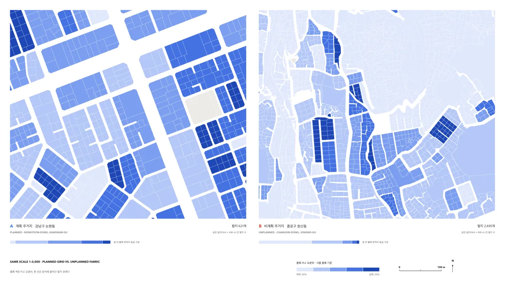
Shape Index
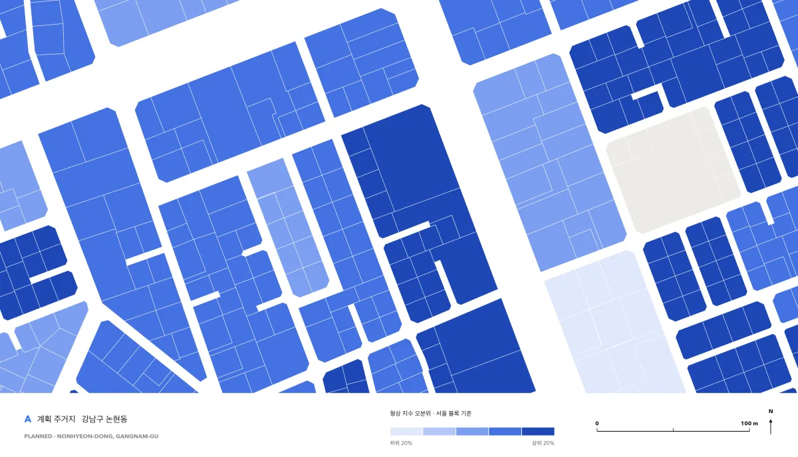
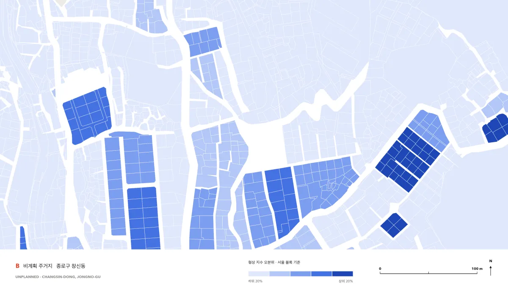
Shape Index Distribution
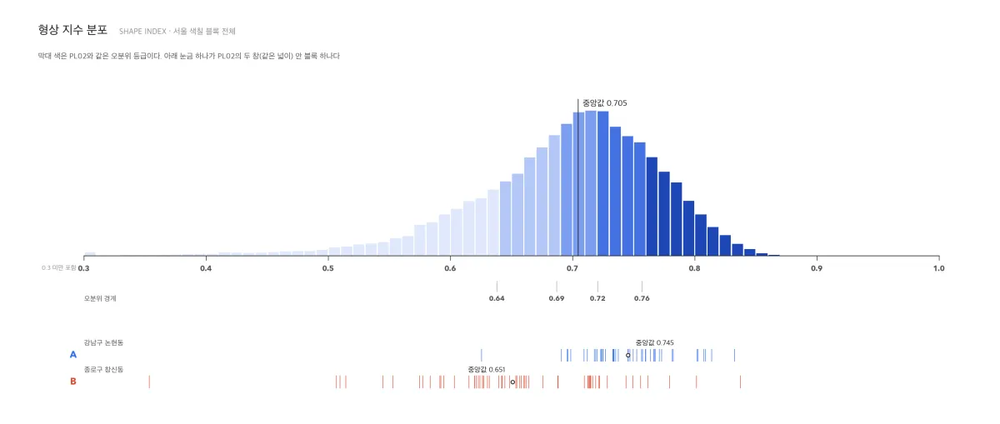
High and Low Blocks
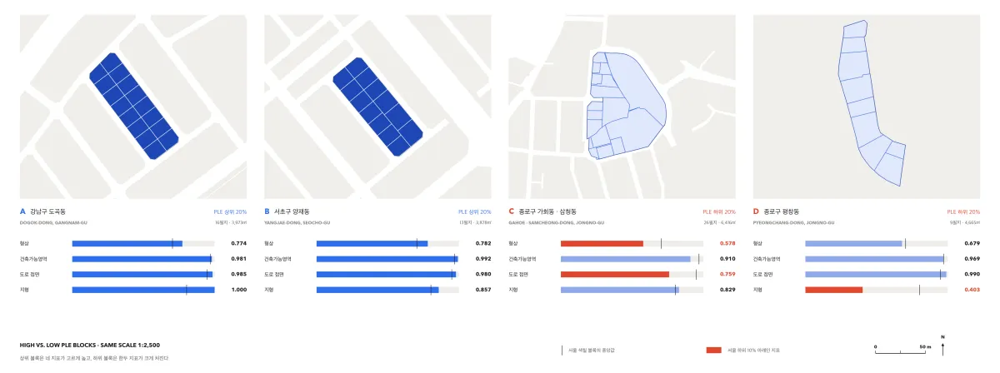
Floor Area by Quintile
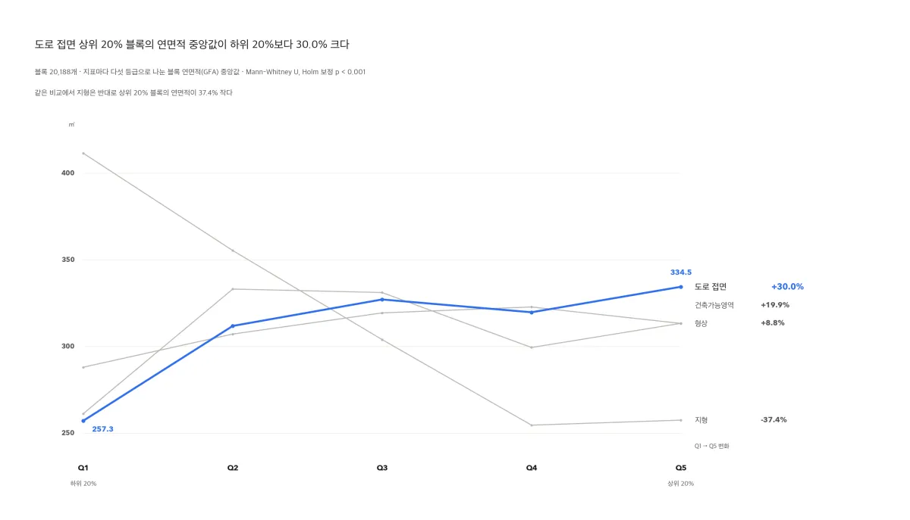
Index and Feasibility
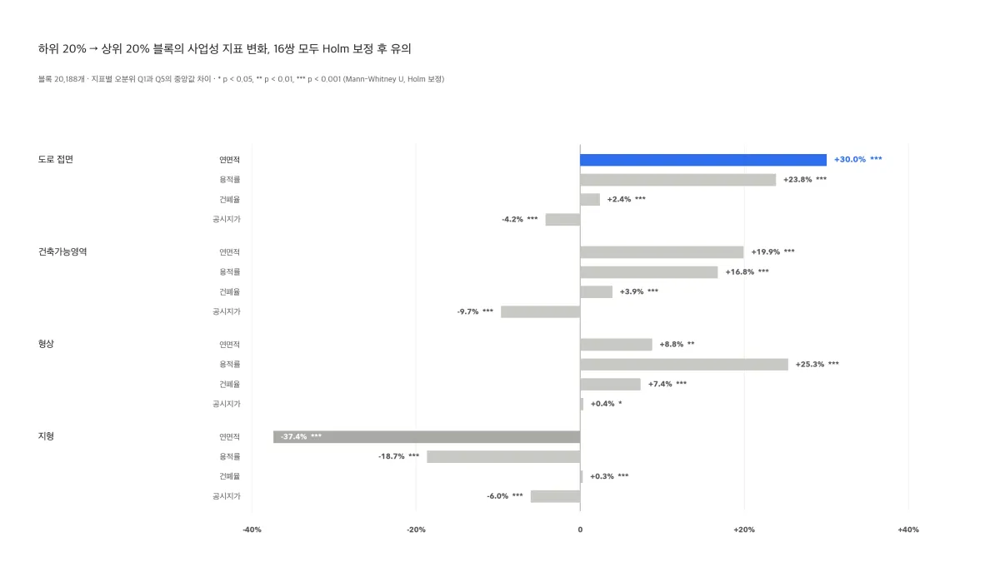